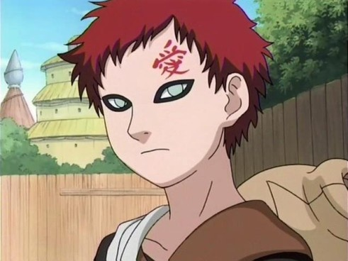

Gaara era uma criança amável, que apesar de ser temido por todos, tentava desesperadamente ser amigável com os outros. Entretanto, era odiado e temido por toda vila, inclusive pelo seu próprio pai, o Yondaime Kazekage, que culpava seu filho pela morte de sua mulher. A única pessoa a qual Gaara podia contar era com seu tio Yashamaru, no entanto, o mesmo tentou matar Gaara dizendo que o odiava por ele ter sido a causa da morte de sua irmã.
Com todos pensamentos negativos vividos após a traição de seu tio, Gaara usou sua areia para criar um kanji em sua testa com o significado "amor" (愛, ai), como um símbolo de sua resolução de ser um "demônio que ama só a si mesmo", e jus ao nome que sua mãe havia lhe dado. Considerado como um monstro pela vila e sem ninguém para amá-lo, Gaara passou a desprezar o mundo e começou contando apenas com sua própria força, ganhando o título de Gaara do Deserto (砂瀑の我愛羅, Sabaku no Gaara).